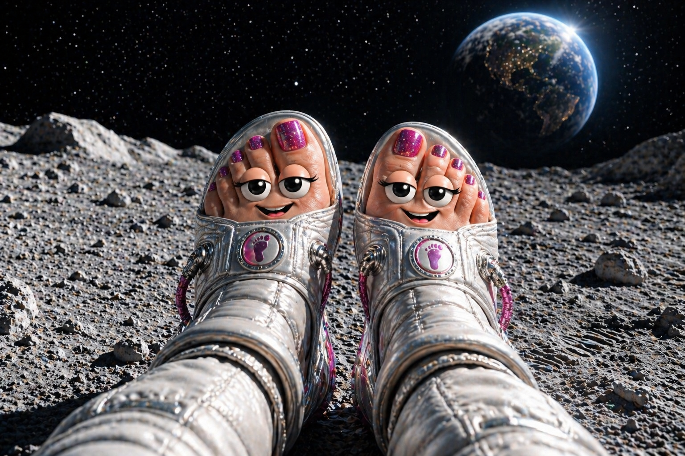
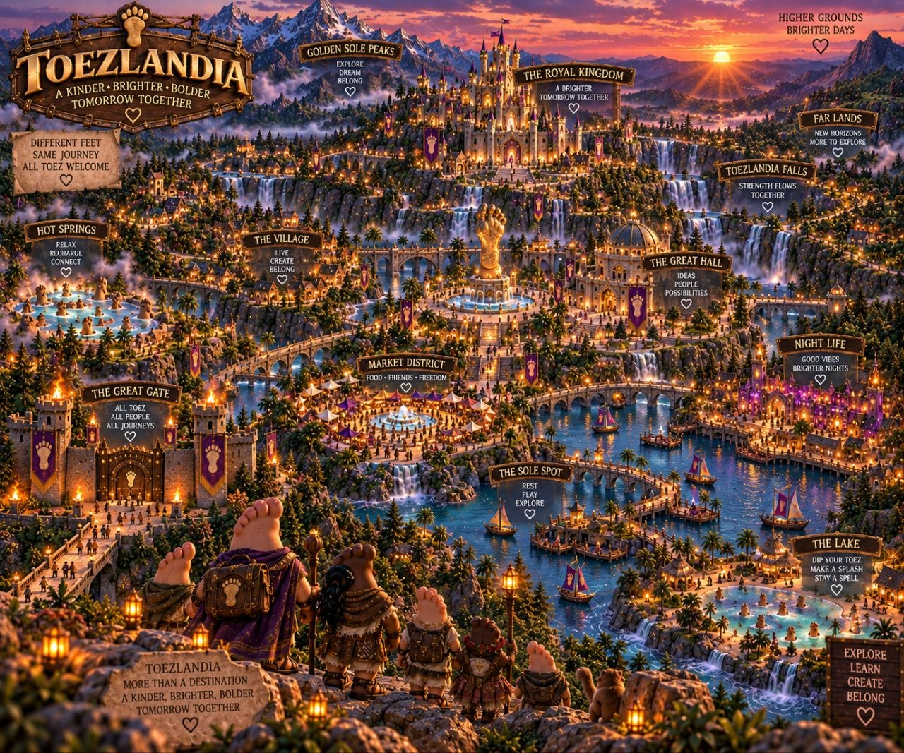
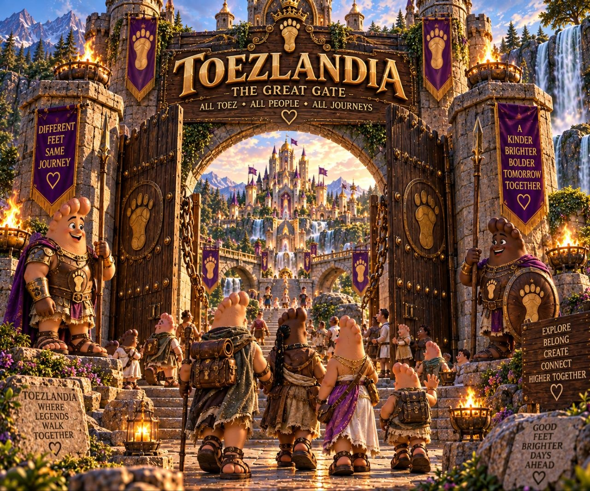
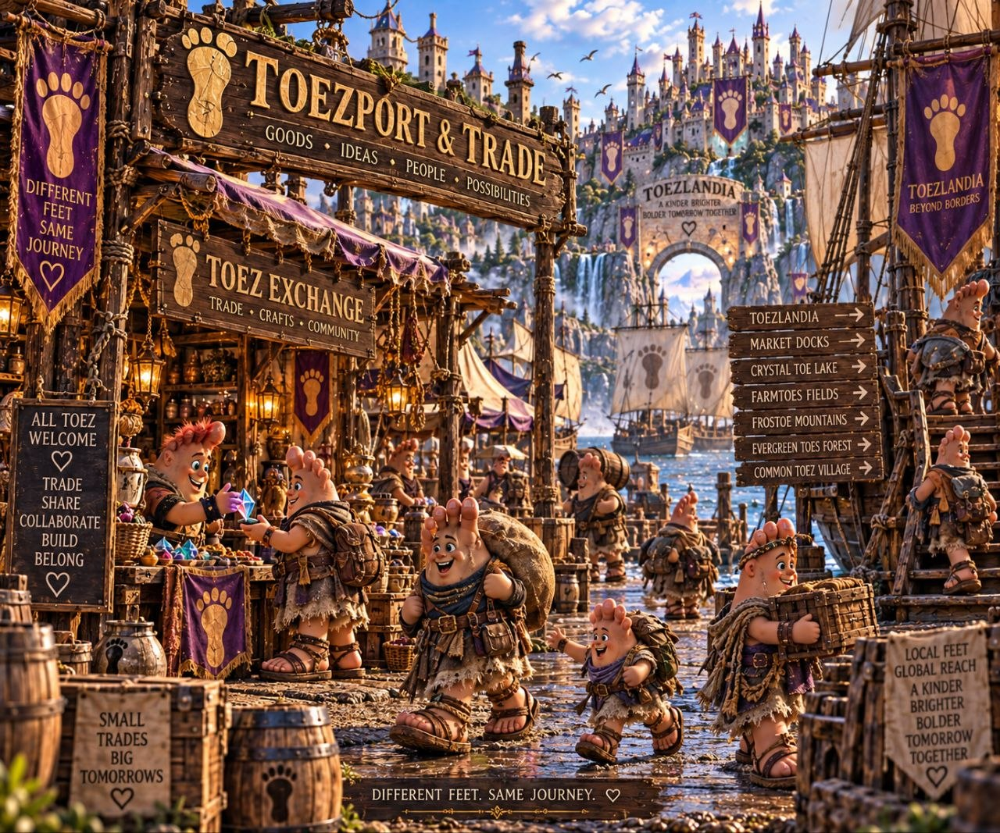
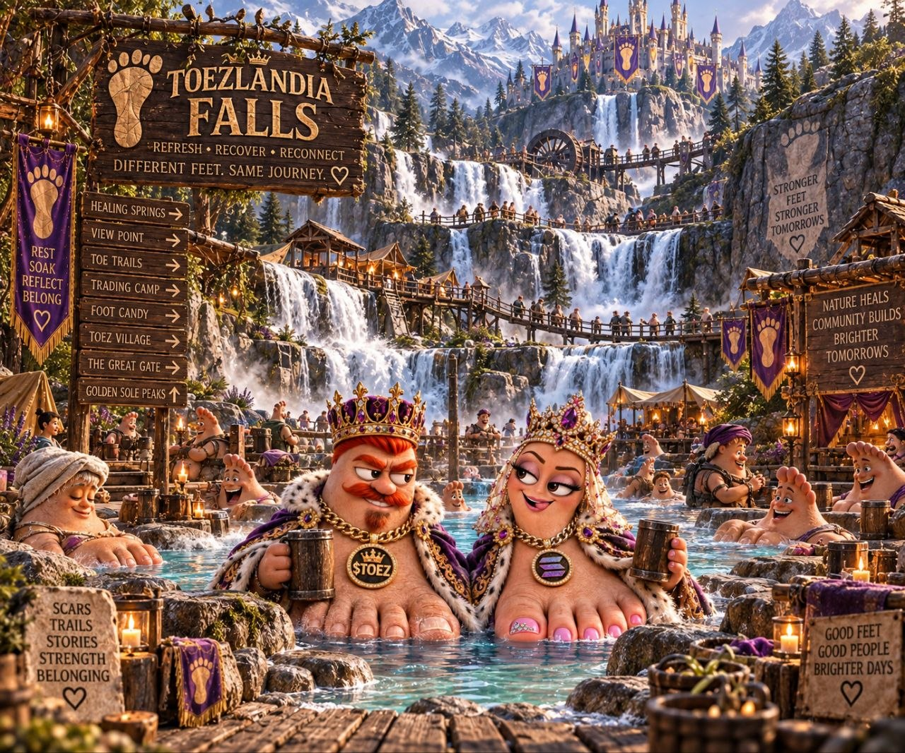
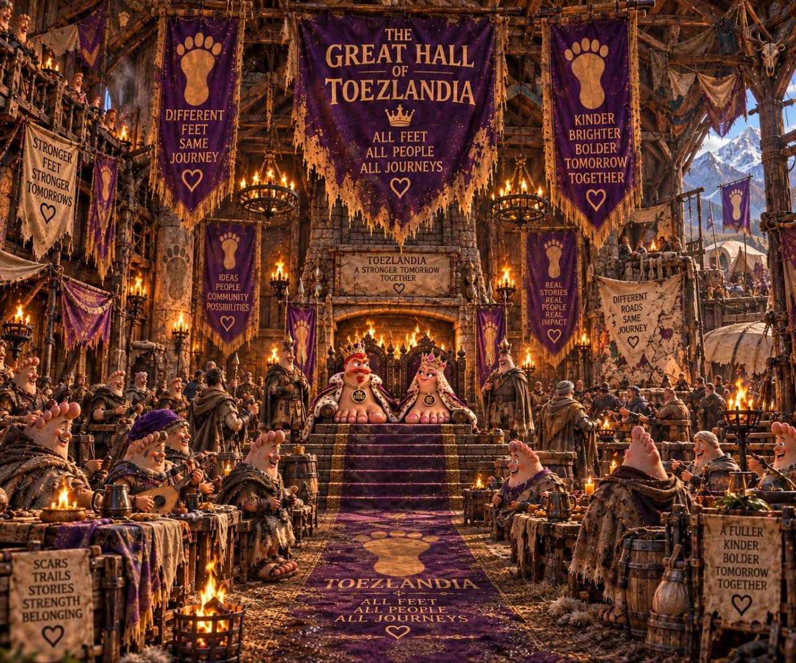
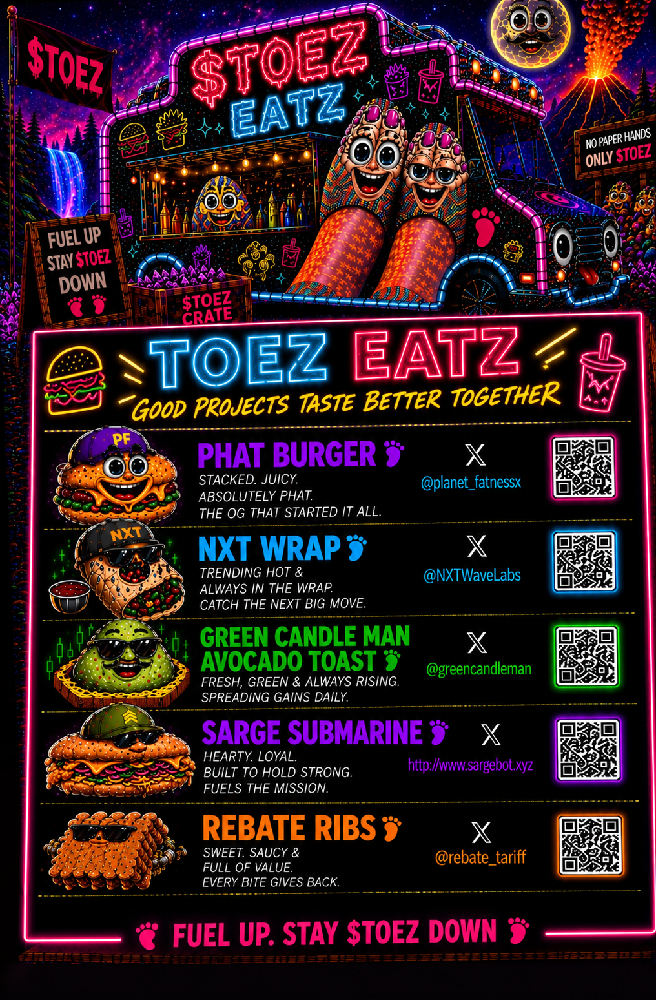

The Origin
It started with a pedicure.
Then a group chat. Then a joke. Then the joke became a community. And somewhere along the way, the community started building a world.
$TOEZ was the first step. TOEZLANDIA is what came next.

Ten Toez Down
$TOEZ started as a joke in a group chat. TOEZLANDIA is the kingdom the community built around it.
Different Feet · Different Roads · Same Journey
We built the characters. We told the stories. We opened the gates.
Now people can actually step inside.


The Great Gate
A kingdom built from the people, stories and absurdity that made $TOEZ what it is.
Beyond the Gate
Where every kingdom begins.
Trade. Grow. Expand.
The realm keeps moving.
The climb gets harder.
Built one step at a time.
Chapter I · The Tavern
TOEZLANDIA is a place with its own humor, characters and corners worth remembering.

Chapter II · ToeZport & Trade
Trade opens. Materials matter. The world grows.

Chapter III · The Falls
Every player starts somewhere. Every kingdom grows one step at a time.

Chapter IV · The Great Hall
Now playable
TOEZLANDIA is a Telegram Mini App. Open it, claim a patch of the realm, and build it one step at a time.
The Origin
Then a group chat. Then a joke. Then the joke became a community. And somewhere along the way, the community started building a world.
$TOEZ was the first step. TOEZLANDIA is what came next.

A roadside stop in TOEZ culture
The food truck that gives flowers to the projects and people we cross paths with.
The token
The first step, and still the ticket in. Contract below — always verify before you trade.
3DRCui7ZbEykhrUHMbyXSvn5731fbKchFTFvs1Wjpump
Live chart loads on demand to keep the page fast on mobile.
Ten Toez Down.
TOEZLANDIA — a kingdom built one step at a time.